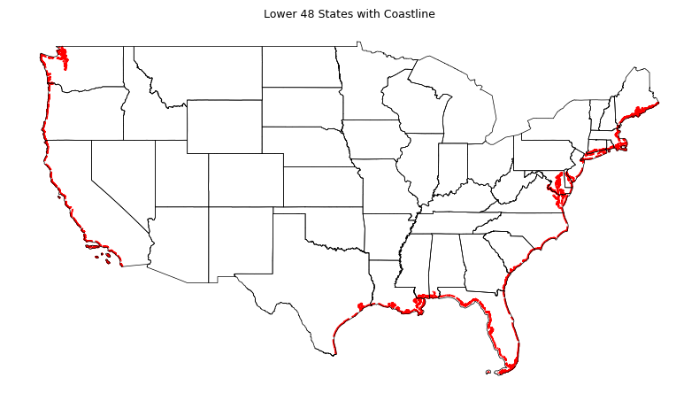

Determining Distance to Coastline for Policy Locations Using GeoPandas
Determining distance to coastline for policy locations using GeoPandas
Python
Geospatial
Published
October 14, 2024
Knowing the distance to coastline for an exposure is crucial for insurance rating applications because it helps insurers assess the risk of hazards like hurricanes, storm surges, and flooding, which are much more prevalent in coastal areas. This information allows insurers to make informed decisions about pricing, underwriting and reinsurance. Properties closer to the coast are generally at higher risk, leading to higher premiums for these properties. Insurance rating plans may use distance to coastline directly as an explanatory variable, with factors inversely proportional to distance to coastline.
This article walks through how GeoPandas can be used to calculate distance to coastline for a collection of simulated latitude-longitude pairs in the Florida region, and how these exposure locations can be assigned to different risk levels based on the distance calculation.
Coastal Shapefiles
The United States Census Bureau provides shapefiles for state, county and ZCTA boundaries as well as roads, rails an coastlines (see full list here). Shapefiles are a widely-used geospatial vector data format that store the geometric location and attribute information of geographic features, which can be represented as points, lines, or polygons.
We being by downloading the COASTLINE zip archive available on the Census Bureau’s FTP site. The COASTLINE shapefile is loaded into GeoPandas (the STATE shapefile is also loaded for later use). We limit our analysis to the continental United States and filter out the Great Lakes. Inspecting the first few records:
import numpy as npimport pandas as pdimport geopandas as gpdnp.set_printoptions(suppress=True, precision=5)pd.options.mode.chained_assignment =Nonepd.set_option('display.max_columns', None)pd.set_option('display.width', None)coastline_shp ="tl_2024_us_coastline.zip"us_shp ="tl_2024_us_state.zip"# Bounding box of lower 48 states. Remove Great Lakes.xmin, ymin, xmax, ymax =-125, 24.6, -65, 50coast = gpd.read_file(coastline_shp)coast = coast.cx[xmin:xmax, ymin:ymax]coast = coast[coast.NAME!="Great Lakes"].reset_index(drop=True)# State boundaries.states = gpd.read_file(us_shp)[["NAME", "geometry"]]states = states.cx[xmin:xmax, ymin:ymax].reset_index(drop=True)print(f"coast.shape : {coast.shape}")print(f"states.shape: {states.shape}")coast.head(10)
coast.shape : (2916, 3)
states.shape: (49, 2)
NAME
MTFCC
geometry
0
Atlantic
L4150
LINESTRING (-80.88368 32.03912, -80.88365 32.0...
1
Atlantic
L4150
LINESTRING (-70.66800 41.51199, -70.65663 41.5...
2
Atlantic
L4150
LINESTRING (-76.58108 38.09572, -76.58184 38.0...
3
Atlantic
L4150
LINESTRING (-73.75518 40.58565, -73.75517 40.5...
4
Atlantic
L4150
LINESTRING (-76.15615 38.63324, -76.15070 38.6...
5
Atlantic
L4150
LINESTRING (-76.53289 39.20776, -76.53298 39.2...
6
Atlantic
L4150
LINESTRING (-73.93653 40.56644, -73.93594 40.5...
7
Atlantic
L4150
LINESTRING (-81.10208 29.42706, -81.10215 29.4...
8
Atlantic
L4150
LINESTRING (-71.89236 41.32922, -71.89293 41.3...
9
Atlantic
L4150
LINESTRING (-75.31239 38.94595, -75.31239 38.9...
The coastline shapefile is comprised of ~3,000 LINESTRING objects. Let’s get a count of geometries by NAME:
To overlay the coastline along with state boundaries, download the STATE shapefile from the Census Bureau’s FTP site and plot them together:
fig, ax = plt.subplots(1, 1, figsize=(8, 6), tight_layout=True)ax.set_title("Lower 48 States with Coastline", fontsize=9)coast.plot(ax=ax, edgecolor="red", linewidth=1.50, linestyle="--")states.boundary.plot(ax=ax, edgecolor="black", linewidth=0.50)ax.axis("off")plt.show()

Let’s next generate synthetic latitude-longitude pairs from within the Florida bounding envelope. The envelope bounds can be obtained from Florida’s geometry as follows:
# Get bounding box for each state.states["bbox"] = states.geometry.map(lambda gg: gg.envelope.bounds)# Put coordinates in separate columns.states[["lon0", "lat0", "lon1", "lat1"]] = pd.DataFrame(states.bbox.tolist(), index=states.index)states.head()
Make this Notebook Trusted to load map: File -> Trust Notebook
# Sample within bounds defined by lat0, lon0, lat1, lon1. nbr_locations =50rng = np.random.default_rng(516)rlats = rng.uniform(low=lat0, high=lat1, size=nbr_locations)rlons = rng.uniform(low=lon1, high=lon0, size=nbr_locations)points =list(zip(rlats, rlons))
Visualizing the synthetic locations:
m = folium.Map(location=[mlat, mlon], zoom_start=8)for lat, lon in points: folium.CircleMarker( location=[lat, lon], radius=5, color="red", fill_color="red", fill=True, fill_opacity=1 ).add_to(m)m
Make this Notebook Trusted to load map: File -> Trust Notebook
Next the points list needs to be represented as a GeoDataFrame, using the generated points as the geometry. We set "crs=EPSG:4326" representing longitude-latitude pairs. A policy_id is included as an identifier for each point.
dfpoints = pd.DataFrame({"policy_id": [str(ii).zfill(7) for ii inrange(len(points))],"lat": rlats, "lon": rlons, })# Create GeoDataFrame.points = gpd.GeoDataFrame( dfpoints, geometry=gpd.points_from_xy(dfpoints.lon, dfpoints.lat), crs="EPSG:4326")points.head(10)
policy_id
lat
lon
geometry
0
0000000
26.158425
-81.697845
POINT (-81.69785 26.15842)
1
0000001
27.308367
-80.743510
POINT (-80.74351 27.30837)
2
0000002
26.050160
-81.226294
POINT (-81.22629 26.05016)
3
0000003
26.896432
-80.682348
POINT (-80.68235 26.89643)
4
0000004
27.407736
-81.556209
POINT (-81.55621 27.40774)
5
0000005
26.551877
-80.902803
POINT (-80.90280 26.55188)
6
0000006
26.301071
-81.521000
POINT (-81.52100 26.30107)
7
0000007
27.435718
-81.499145
POINT (-81.49914 27.43572)
8
0000008
27.784378
-80.590765
POINT (-80.59076 27.78438)
9
0000009
27.635399
-81.389836
POINT (-81.38984 27.63540)
With both the coastline shapefile and point data represented as GeoDataFrames, we execute the sjoin_nearest spatial join to get the distance from each point to the nearest coastline. First we need to set the crs to a projected coordinate system so the distances are returned in units of meters instead of degrees. Projected coordinate systems use linear units like meters or feet, which makes it easier to perform precise spatial measurements. Here we opt for the Conus Albers equal area conic projection (EPSG:5069).
In the call to sjoin_nearest, we specify “meters” for the distance_col argument. This column will hold the distance to the coastline for each point in points in units of meters. A miles column is added after the join.
# Convert from GPS to Conus Albers. points = points.to_crs("EPSG:5069")coast = coast.to_crs("EPSG:5069")# Perform spatial join. Covert meters to miles. gdf = gpd.sjoin_nearest(points, coast, how="left", distance_col="meters")gdf["miles"] = gdf["meters"] *0.000621371# Get min, max and average distance to coast line.min_dist = gdf.miles.min()max_dist = gdf.miles.max()avg_dist = gdf.miles.mean()print(f"min. distance to coastline: {min_dist}")print(f"max. distance to coastline: {max_dist}")print(f"avg. distance to coastline: {avg_dist}")
min. distance to coastline: 0.20197535859716287
max. distance to coastline: 65.35183791451661
avg. distance to coastline: 35.26215239057489
Rate Group Based on Distance to Coastline
Let’s imagine a hypothetical rating plan that uses the following distances from the coastline to determine rates:
0 - 5 miles: very high risk
5 - 25 miles: high risk
25 - 50 miles: medium risk
greater than 50 miles: low risk
A rolling join via merge_asof can be used to select the last row in the right DataFrame (group thresholds) whose on key is less than or equal to gdf’s key, which will be “miles” in both DataFrames.